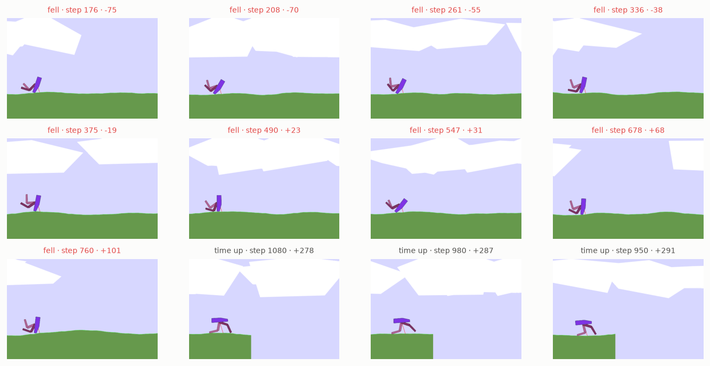
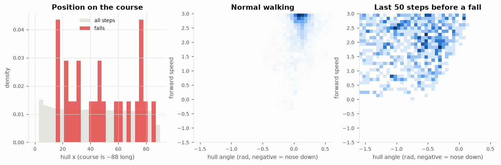
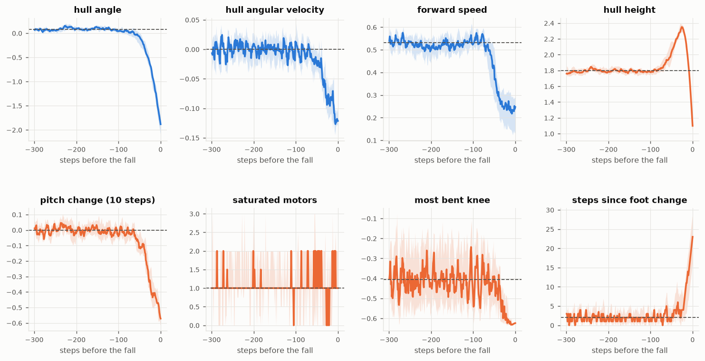
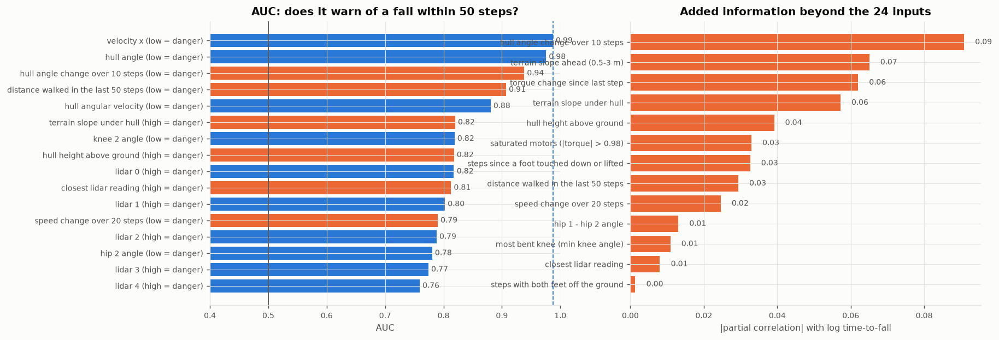
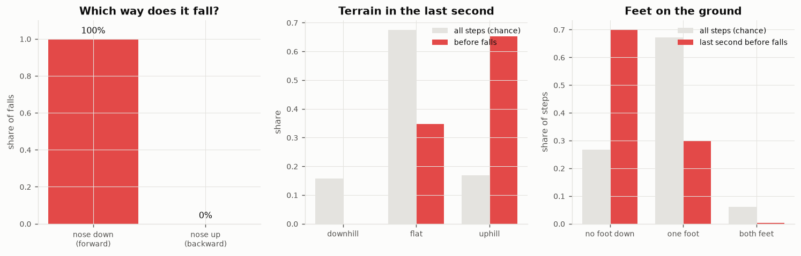
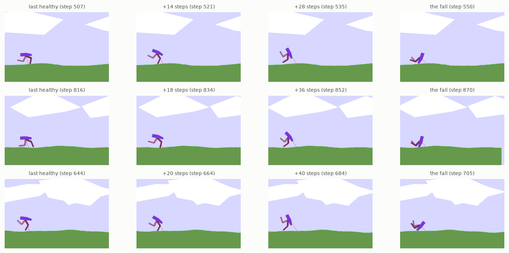

CMA-ES champion (generation 529, network 24-32-4) on 300 analysis terrains (seeds 30000000+, never used in training or testing): 23 falls (8%), mean reward 267.2. Snapshots every 10 steps; "falls soon" = within 50 steps (1 s); "normal" = more than 300 steps before a fall, or an episode without one.
| signal | median, normal | median at fall | AUC (danger when) | added info (partial corr.) | leaves normal range at |
|---|---|---|---|---|---|
| hull angle input | 0.0766 | -1.88 | 0.98 (low) | -62 steps | |
| hull angular velocity input | -0.0002 | -0.121 | 0.88 (low) | -37 steps | |
| velocity x input | 0.531 | 0.247 | 0.99 (low) | -55 steps | |
| velocity y input | 0.0012 | -0.374 | 0.56 (low) | ||
| hull angle change over 10 steps | -0.002 | -0.572 | 0.94 (low) | 0.09 | -39 steps |
| distance walked in the last 50 steps | 4.45 | 2.08 | 0.91 (low) | 0.03 | |
| terrain slope under hull | 0 | 0.0737 | 0.82 (high) | 0.06 | |
| hull height above ground | 1.8 | 1.1 | 0.82 (high) | 0.04 | -7 steps |
| closest lidar reading | 0.337 | 0.206 | 0.81 (high) | 0.01 | |
| speed change over 20 steps | 0.052 | -0.19 | 0.79 (low) | 0.02 | |
| steps with both feet off the ground | 0 | 24 | 0.76 (high) | 0.00 | |
| steps since a foot touched down or lifted | 2 | 23 | 0.75 (high) | 0.03 | -19 steps |
| most bent knee (min knee angle) | -0.406 | -0.624 | 0.74 (low) | 0.01 | -11 steps |
| torque change since last step | 1.69 | 2.07 | 0.73 (high) | 0.06 | |
| terrain slope ahead (0.5-3 m) | 0.0014 | 0.016 | 0.72 (high) | 0.07 | |
| hip 1 - hip 2 angle | -1.14 | -0.462 | 0.70 (high) | 0.01 | |
| saturated motors (|torque| > 0.98) | 1 | 1 | 0.52 (high) | 0.03 |
"Leaves normal range" = the step before the fall where the median trajectory last leaves the 10-90% band of normal walking (drift signals only).
Final frame of 9 falls (sorted by score, worst first) and 3 episodes that ran out of time (worst, median, best). 23 of 300 episodes end in a fall; every other episode ends at the 1600-step limit before the end of the course.

Left: falls are spread along the course, not tied to one place. Middle and right: hull angle against forward speed. Normal walking stays in a tight spot; before a fall the hull pitches nose-down while still moving forward.

Median (line) and interquartile band over the last 300 steps of every fall. Dashed: the typical value during normal walking. Blue = inputs the network already sees, orange = candidate signals it doesn't.

Left: AUC of each signal alone for "falls within 50 steps" on snapshots every 10 steps (the network has no value estimate, so the dashed line is the best single input, velocity x). Right: correlation with time-to-fall after removing what the 24 inputs already explain. A high bar here is information the network does not have.

Left: the direction of the fall from the final hull angle. Middle: terrain slope under the hull in the last second before falls, compared with all steps. Right: how many feet are on the ground in the last second, compared with normal.

Three falls (short, median and long run-up): the last healthy step (hull angle and pitch rate both within the normal 75th percentile), two steps in between, and the fall. Median distance from onset to fall: 55 steps (1.1 s); middle half 44-61 steps.
